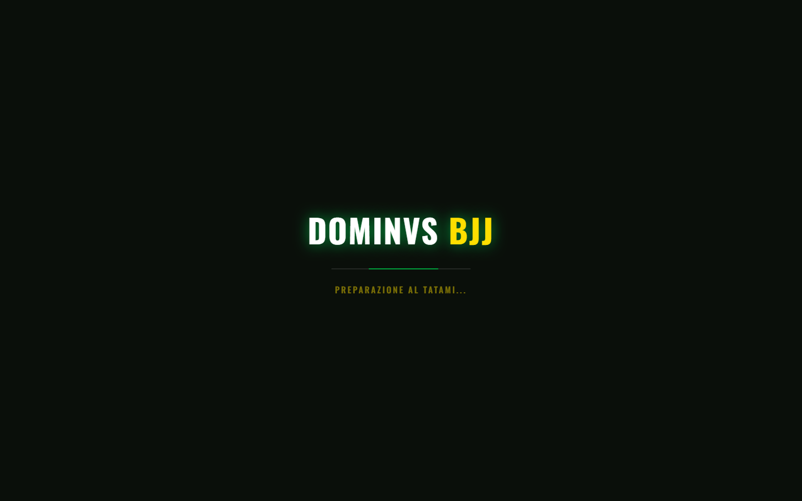
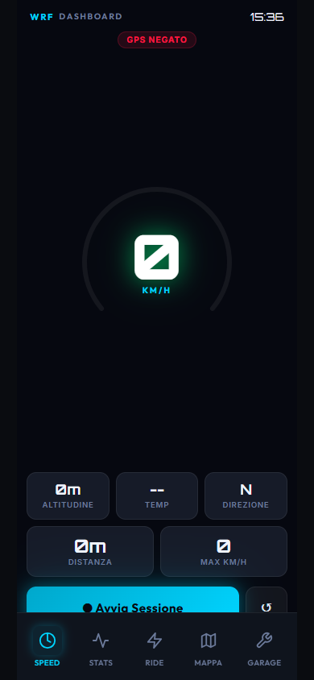
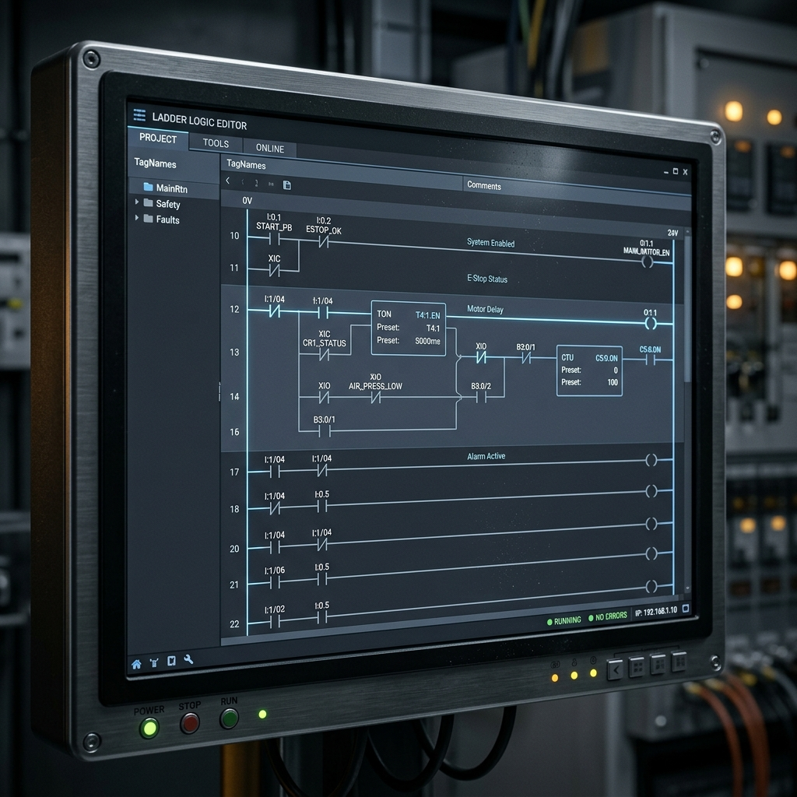

Unisco ingegneria del software, intelligenza artificiale e design
per creare strumenti professionali e prodotti reali.
Non aspetto di finire la scuola per iniziare a costruire.
Il mio percorso nasce dalla curiosità. Ho imparato a programmare per risolvere problemi concreti, sviluppando applicazioni reali prima ancora di studiarle a scuola.
Unisco mondi diversi: l'ingegneria e i motori con la precisione del codice. Ogni mio progetto è guidato dall'obiettivo di creare qualcosa di elegante, funzionale e pronto per il mercato.
Web app, PWA, dashboard interattive.
Automazione, agenti autonomi, accelerazione dello sviluppo.
Sistemi di logica PLC e automazione hardware (Siemens).
Strumenti reali creati per risolvere problemi concreti. Seleziona un progetto per esplorarlo.
Sito professionale per un'accademia di Jiu Jitsu. Sviluppato con focus su performance, SEO avanzato per sedi multiple e design premium.

Un'applicazione PWA completa per tracciare la manutenzione della Yamaha WR450F. Gestione ore motore, log storici, cloud sync via Firebase.

Ambiente di sviluppo locale integrato con un agente AI autonomo (ReAct pattern). L'intelligenza artificiale interagisce con il file system, esegue comandi e crea codice in totale autonomia.
Traduce il linguaggio naturale in logica industriale PLC (IEC 61131-3). Automatizza la stesura del codice Ladder per Siemens LOGO! riducendo drasticamente i tempi di programmazione.

Come unisco logica e creatività per sviluppare ad alta velocità.
Studio l'esperienza utente e la struttura tecnica prima di scrivere codice. Utilizzo interfacce minimali e palette professionali per garantire prodotti intuitivi e premium.
L'intelligenza artificiale non è uno strumento estetico, ma il mio copilota. Accelero il problem solving, la stesura di boilerplate e l'analisi di architetture complesse.
Scrivo codice pulito e modulare. Faccio deploy continui su GitHub Pages, testo le soluzioni in ambienti reali (come usare l'app WRF in pista) e ottimizzo costantemente.
L'evoluzione delle mie competenze tecniche.
Esplorazione del web moderno. Comprensione solida di HTML, CSS e JavaScript per costruire interfacce responsive e dinamiche.
Sviluppo della prima app PWA per la mia moto, integrando Firebase per il cloud storage e testando il prodotto offline in situazioni reali.
Il codice genera valore. Sviluppo, ottimizzo per la SEO e pubblico siti professionali per attività locali, gestendo domini e deploy.
Progettazione di ecosistemi autonomi, agenti AI capaci di scrivere codice e simulatori industriali complessi per macchinari automatizzati.
Lorenzo Regazzi • Portfolio 2026